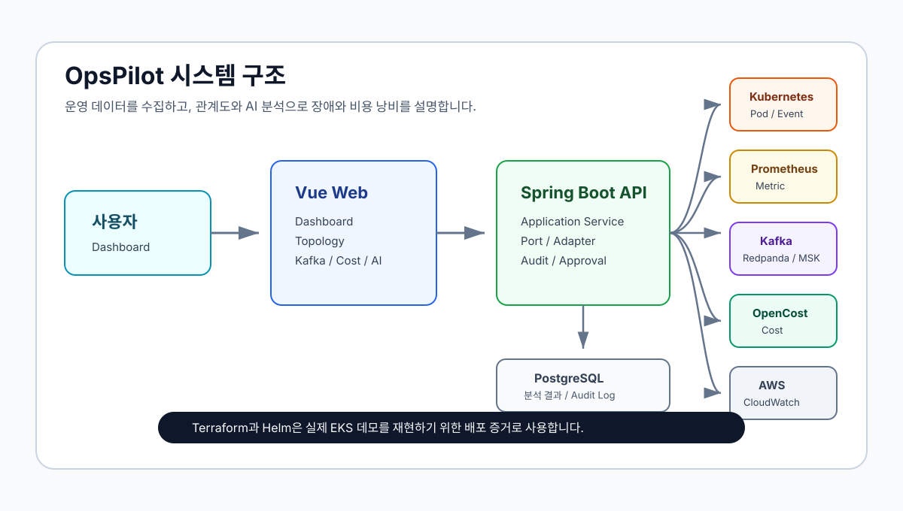

Kubernetes 관계도
Deployment, ReplicaSet, Pod, Service, EndpointSlice, PVC, Node 관계를 그래프로 연결해 장애 영향 범위를 확인합니다.
목록이 아니라 관계 중심으로 보기AI 기반 CloudOps 포트폴리오
Kubernetes, AWS, Kafka 상태를 한곳에서 보고, 객체 관계도와 근거 기반 AI 분석으로 장애 원인과 비용 낭비 지점을 빠르게 찾는 운영 플랫폼입니다.

무엇을 보여주는 프로젝트인가
Deployment, ReplicaSet, Pod, Service, EndpointSlice, PVC, Node 관계를 그래프로 연결해 장애 영향 범위를 확인합니다.
목록이 아니라 관계 중심으로 보기topic, partition, consumer group, lag를 workload와 연결해 비동기 처리 지연을 애플리케이션 맥락에서 추적합니다.
Redpanda와 MSK 모두 확장 가능event, log, metric, rollout history, Kafka lag를 근거로 원인 후보와 조치안을 제시하되 직접 운영 조치는 실행하지 않습니다.
근거 기반 분석과 안전한 승인 흐름핵심 데모 흐름
시스템 구조
Vue 3 SPA가 Dashboard, Topology, Kafka, Cost, Incident 화면을 제공합니다.
Spring Boot API가 Kubernetes, Prometheus, Kafka, OpenCost, AWS Adapter를 조율합니다.
PostgreSQL에는 사용자, snapshot, 분석 결과, 추천, audit log를 저장합니다.
Kubernetes API, Redpanda/MSK, CloudWatch, Cost Explorer를 port/adapter로 분리합니다.
저비용 배포 전략